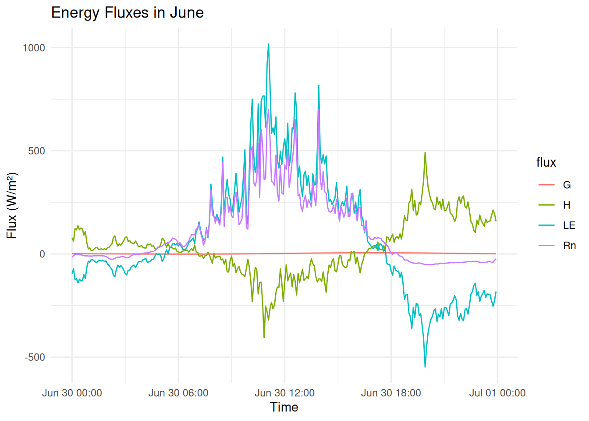
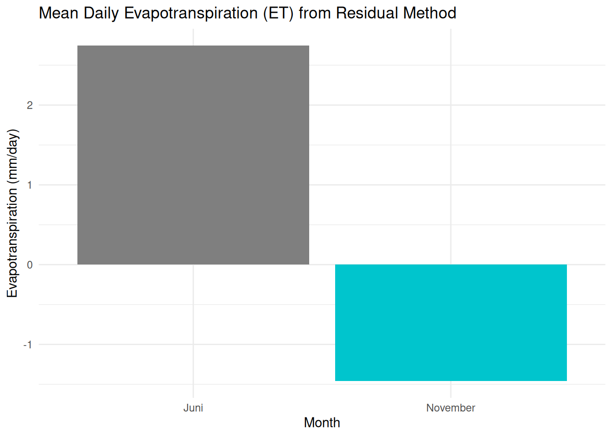

Code
library(tidyverse)
library(lubridate)
library(units)
energy <- read_csv("../data/energie_bil_wiese.csv") %>%
mutate(datetime = dmy_hm(datetime))This tutorial calculates surface energy balance components using micrometeorological observations from an energy balance station. We implement a simplified diagnostic approach based on physical theory and field measurements.
Understanding the surface energy balance is essential for quantifying the partitioning of energy into heating, evaporation, and ground storage. This notebook follows a physically grounded approach to derive the key energy fluxes from field observations.
The fundamental balance at the land surface is:
\[ R_n = H + LE + G + S \]
Where:
Assumption: For half-hourly or hourly timesteps and shallow sensors, we assume \(S \approx 0\)$.
Therefore, we estimate:
\[LE = R_n - G - H\] ### Data Used in This Analysis
| Variable | Meaning | Source |
|---|---|---|
rad_bil |
Approximate net radiation (R_n) | Measured via 4-component radiometer or surrogate |
heatflux_soil |
Ground heat flux (G) | Soil heat flux plate |
Ta_2m, Ta_10m |
Air temperature at 2 m and 10 m | Thermistors |
Windspeed_2m, Windspeed_10m |
Wind speed at two heights | Anemometers |
In surface energy balance analysis, the bulk transfer and residual methods complement each other:
This creates a simple yet effective hybrid approach: - Physically based: \(H\) is grounded in turbulence theory. - Energetically constrained: \(LE\) ensures energy conservation at the surface.
Together, they enable complete estimation of surface fluxes from standard meteorological data.
energy <- energy %>%
rename(
Rn = rad_bil,
G = heatflux_soil,
Ta_2m = Ta_2m,
Ta_10m = Ta_10m,
WS_2m = Windspeed_2m,
WS_10m = Windspeed_10m
) %>%
mutate(
delta_T = Ta_10m - Ta_2m,
WS_mean = (WS_2m + WS_10m) / 2,
month_num = month(datetime),
month_label = case_when(
month_num == 6 ~ "June",
month_num == 11 ~ "November",
TRUE ~ as.character(month(datetime, label = TRUE))
)
)Sensible heat flux (H) is the rate at which thermal energy is transferred from the Earth’s surface to the atmosphere due to a temperature difference. It is a critical term in the surface energy balance and is especially important in meteorology, hydrology, and micrometeorology.
It describes how warm the surface is compared to the air above it — and how turbulent air motion carries that heat away. The bulk transfer formulation for (H) assumes a logarithmic wind profile and neutral atmospheric conditions short explanation adding to the scalar laws.
\[ H = \rho c_p \cdot \frac{\Delta T}{r_a} \]
Where:
| Symbol | Meaning |
|---|---|
| \(H\) | Sensible heat flux \(W/m²\) |
| \(rho\) | Air density \(kg/m³\) (typically ≈ 1.225 at sea level) |
| \(c_p\) | Specific heat of air at constant pressure \(J/kg/K\) \(≈ 1005 J/kg/K\) |
| \(Delta T\) | Temperature difference between two heights: \(T\_{z2} - T\_{z1}\) \(K\) |
| \(r_a\) | Aerodynamic resistance to heat transfer \(s/m\) |
Aerodynamic resistance quantifies how turbulent air mixes heat. It depends on wind speed, measurement height, and surface roughness.
For a flat and open surface, and assuming a neutral atmosphere:
\[r_a = \frac{\ln(z_2/z_1)}{k \cdot u_{mean}}\]
Where:
| Symbol | Meaning |
|---|---|
| \(z_1\) | Lower measurement height (e.g. 2 m) |
| \(z_2\) | Upper measurement height (e.g. 10 m) |
| \(k\) | von Kármán constant (≈ 0.41) |
| \(u\_{mean}\) | Mean horizontal wind speed between \(z_1\) and \(z_2\) \(m/s\) |
This formula assumes: - horizontally homogeneous surface, - fully turbulent flow, - negligible atmospheric stability effects (i.e. neutral conditions).
A logarithmic wind profile means that wind speed increases with height according to:
\[ u(z) = \frac{u_*}{k} \ln\left(\frac{z}{z_0}\right) \]
where \(u_*\) is the friction velocity, \(k\) the von Kármán constant, and \(z_0\) the roughness length. This profile arises from surface-layer theory under turbulent, steady conditions.
To determine whether neutral atmospheric stratification applies, we estimate the Obukhov length \(L\), a key parameter from Monin–Obukhov similarity theory:
\[ L = -\frac{\rho \cdot c_p \cdot T \cdot u_*^3}{k \cdot g \cdot H} \]
where:
We estimate \(u_*\) from wind speed using the log-profile equation:
\[ u_* = \frac{k \cdot \bar{u}}{\ln(z_2 / z_1)} \]
and compute:
The dimensionless height \(z/L\) is then used to classify stability:
This allows us to screen the dataset and verify whether bulk formulations assuming neutral stratification are valid at given time steps.
Turbulent scalar transport refers to the movement of quantities like temperature or humidity due to turbulent eddies in the atmosphere. These fluxes follow a gradient–flux relationship:
\[ F_\phi = -K_\phi \cdot \frac{\partial \phi}{\partial z} \]
where:
In field applications, this is simplified into bulk transfer formulas like:
\[ H = \rho \cdot c_p \cdot \frac{\Delta T}{r_a} \]
which relate scalar differences to vertical fluxes via aerodynamic resistance \(r_a\).
- Assumes neutral stability — ignores buoyancy effects (unstable/stable conditions).
- Requires accurate wind and temperature measurements.
- Works best over homogeneous, flat terrain.
- May underestimate or overestimate fluxes under low wind or very moist/dry conditions.The latent heat flux \(LE\) quantifies the energy used for evapotranspiration — the combined loss of water to the atmosphere by:
When direct measurement is unavailable, we estimate \(LE\) as the residual of the surface energy balance by subtracting all the known energy components from the total incoming energy:
\[ LE = R_n - G - H \]
Where:
To estimate the surface energy balance components, we combine two complementary methods:
| Component | Bulk Transfer Method | Residual Method |
|---|---|---|
| What it estimates | Sensible heat flux (\(H\)) | Latent heat flux (\(LE\)) |
| Required inputs | \(\Delta T\) (temp. difference), \(\bar{u}\) (mean wind speed) | \(R_n\) (net radiation), \(G\) (ground heat), and \(H\) |
| Physical principle | Turbulent heat transport via scalar gradient | Energy conservation (surface energy balance) |
| Formula used | \(H = \rho \cdot c_p \cdot \dfrac{\Delta T}{r_a}\) | \(LE = R_n - G - H\) |
| Key assumption | Logarithmic wind profile, neutral stratification | Negligible storage term \(S \approx 0\) |
| Output in your case | \(H = 251\,\text{W/m}^2\) (based on realistic inputs) | \(LE = 289\,\text{W/m}^2\) (by residual) |
We use the following measured or typical values from a grassland site at midday:
Aerodynamic resistance is estimated using the logarithmic wind profile assumption:
\[ r_a = \frac{\ln(z_2 / z_1)}{k \cdot \bar{u}} = \frac{\ln(10 / 2)}{0.41 \cdot 1.6} \approx 2.453\,\text{s/m} \]
Now we insert this into the bulk formula for \(H\):
\[ H = \rho \cdot c_p \cdot \frac{\Delta T}{r_a} = 1.225 \cdot 1005 \cdot \frac{0.5}{2.453} \approx 251\,\text{W/m}^2 \]
We now assume the following additional energy balance terms are available:
We calculate latent heat flux \(LE\) as the residual:
\[ LE = R_n - G - H = 620 - 80 - 251 = 289\,\text{W/m}^2 \]
This gives the amount of energy used for evaporation and transpiration, inferred from energy conservation.
By first estimating \(H\) via physical gradients (bulk approach), and then applying the residual method, we close the energy balance without needing direct \(LE\) measurements. This is a standard practice in micrometeorology when eddy covariance data are not available.
Using the residual method:
\(LE = R_n - G - H\)
library(ggplot2)
energy_long <- energy %>%
select(datetime, month_label, Rn, G, H, LE) %>%
pivot_longer(cols = c(Rn, G, H, LE), names_to = "flux", values_to = "value")
plot_fluxes <- function(df, title) {
ggplot(df, aes(x = datetime, y = value, color = flux)) +
geom_line() +
labs(title = title, x = "Time", y = "Flux (W/m²)") +
theme_minimal()
}
plot_fluxes(filter(energy_long, month_label == "June"), "Energy Fluxes in June")
This matches expectations for early summer (June): longer days, moist soils, and active vegetation cover.
This pattern reflects the dormant season, with minimal biological activity and colder atmospheric conditions.
Legend for Energy Flux Components
| Symbol | Description | Sign Convention |
|---|---|---|
| (R_n) | Net radiation | Positive downward |
| (H) | Sensible heat flux | Positive upward (to air) |
| (LE) | Latent heat flux | Positive upward (evaporation) |
| (G) | Ground heat flux | Positive downward (into soil) |
We calculate latent heat flux \(LE\) as the residual:
\[ LE = R_n - G - H = 620 - 80 - 251 = 289\,\text{W/m}^2 \]
Using latent heat of vaporization \(lambda = 2.45 \cdot 10^6\,\text{J/kg}\):
\[ ET = \frac{LE}{\lambda} \cdot \frac{86400}{1000} \]
Insert values:
\[ ET = \frac{330}{2.45 \cdot 10^6} \cdot 86.4 \approx 11.64\,\text{mm/day} \]
On this day, the land surface lost ~11.6 mm of water via evapotranspiration — a very high rate, consistent with moist soil, strong radiation, and active vegetation.
library(dplyr)
library(ggplot2)
# Berechne ET
lambda <- 2.45e6 # J/kg
energy <- energy %>%
mutate(
ET_mm_day = (LE / lambda) * 86400,
month_label = month(datetime, label = TRUE, abbr = FALSE)
)
# Aggregiere pro Monat
monthly_et <- energy %>%
filter(!is.na(ET_mm_day)) %>%
group_by(month_label) %>%
summarise(
mean_ET = mean(ET_mm_day, na.rm = TRUE),
.groups = "drop"
)
# Plot
ggplot(monthly_et, aes(x = month_label, y = mean_ET, fill = month_label)) +
geom_col(show.legend = FALSE) +
labs(
title = "Mean Daily Evapotranspiration (ET) from Residual Method",
x = "Month",
y = "Evapotranspiration (mm/day)"
) +
scale_fill_manual(values = c("June" = "tomato", "November" = "turquoise3")) +
theme_minimal()
# Load required libraries
library(tidyverse) # Core tidyverse packages (readr, dplyr, ggplot2, etc.)
library(lubridate) # For working with dates and times
library(units) # For physical units (e.g., J/kg/K)
# Load energy flux data and parse datetime column
energy <- read_csv("../data/energie_bil_wiese.csv") %>%
mutate(datetime = dmy_hm(datetime)) # Convert 'datetime' column from character to POSIXct
## ----------------------------------------------------------------------
# Rename and derive key variables from measurements
energy <- energy %>%
rename(
Rn = rad_bil, # Net radiation
G = heatflux_soil, # Soil heat flux
Ta_2m = Ta_2m, # Air temperature at 2 m
Ta_10m = Ta_10m, # Air temperature at 10 m
WS_2m = Windspeed_2m, # Wind speed at 2 m
WS_10m = Windspeed_10m # Wind speed at 10 m
) %>%
mutate(
delta_T = Ta_10m - Ta_2m, # Vertical temperature gradient
WS_mean = (WS_2m + WS_10m) / 2, # Mean wind speed
month_num = month(datetime), # Numeric month for logic
month_label = case_when( # Label month manually for plot filtering
month_num == 6 ~ "June",
month_num == 11 ~ "November",
TRUE ~ as.character(month(datetime, label = TRUE))
)
)
## ----------------------------------------------------------------------
# Define physical constants for sensible heat flux calculation
rho_air <- set_units(1.225, "kg/m^3") # Air density
cp_air <- set_units(1005, "J/kg/K") # Specific heat capacity of air
z1 <- 2 # Lower measurement height (2 m)
z2 <- 10 # Upper measurement height (10 m)
k <- 0.41 # von Kármán constant
# Calculate aerodynamic resistance and sensible heat flux (H)
energy <- energy %>%
mutate(
ra = log(z2 / z1) / (k * WS_mean), # Aerodynamic resistance [s/m]
H = drop_units(rho_air * cp_air * delta_T / ra) # Sensible heat flux [W/m²]
)
## ----------------------------------------------------------------------
# Estimate latent heat flux (LE) using residual method: LE = Rn - G - H
energy <- energy %>%
mutate(LE = Rn - G - H)
## ----------------------------------------------------------------------
# Reshape data for plotting: long format for energy balance components
library(ggplot2)
energy_long <- energy %>%
select(datetime, month_label, Rn, G, H, LE) %>%
pivot_longer(cols = c(Rn, G, H, LE), names_to = "flux", values_to = "value")
# Define plotting function for energy fluxes
plot_fluxes <- function(df, title) {
ggplot(df, aes(x = datetime, y = value, color = flux)) +
geom_line() +
labs(title = title, x = "Time", y = "Flux (W/m²)") +
theme_minimal()
}
# Plot fluxes for June
plot_fluxes(filter(energy_long, month_label == "June"), "Energy Fluxes in June")
## ----------------------------------------------------------------------
# Plot fluxes for November
plot_fluxes(filter(energy_long, month_label == "November"), "Energy Fluxes in November")
## ----------------------------------------------------------------------
# Compute evapotranspiration (ET) from latent heat flux (LE)
lambda <- 2.45e6 # Latent heat of vaporization [J/kg]
energy <- energy %>%
mutate(
ET_mm_day = (LE / lambda) * 86400, # Convert LE to mm/day
month_label = month(datetime, label = TRUE, abbr = FALSE) # Full month name
)
# Monthly average ET
monthly_et <- energy %>%
filter(!is.na(ET_mm_day)) %>%
group_by(month_label) %>%
summarise(
mean_ET = mean(ET_mm_day, na.rm = TRUE),
.groups = "drop"
)
# Bar plot: mean ET by month
ggplot(monthly_et, aes(x = month_label, y = mean_ET, fill = month_label)) +
geom_col(show.legend = FALSE) +
labs(
title = "Mean Daily Evapotranspiration (ET) from Residual Method",
x = "Month",
y = "Evapotranspiration (mm/day)"
) +
scale_fill_manual(values = c("June" = "tomato", "November" = "turquoise3")) +
theme_minimal()
## ----------------------------------------------------------------------
# Save processed data to CSV
write_csv(energy, "../data/processed_energy_fluxes.csv")